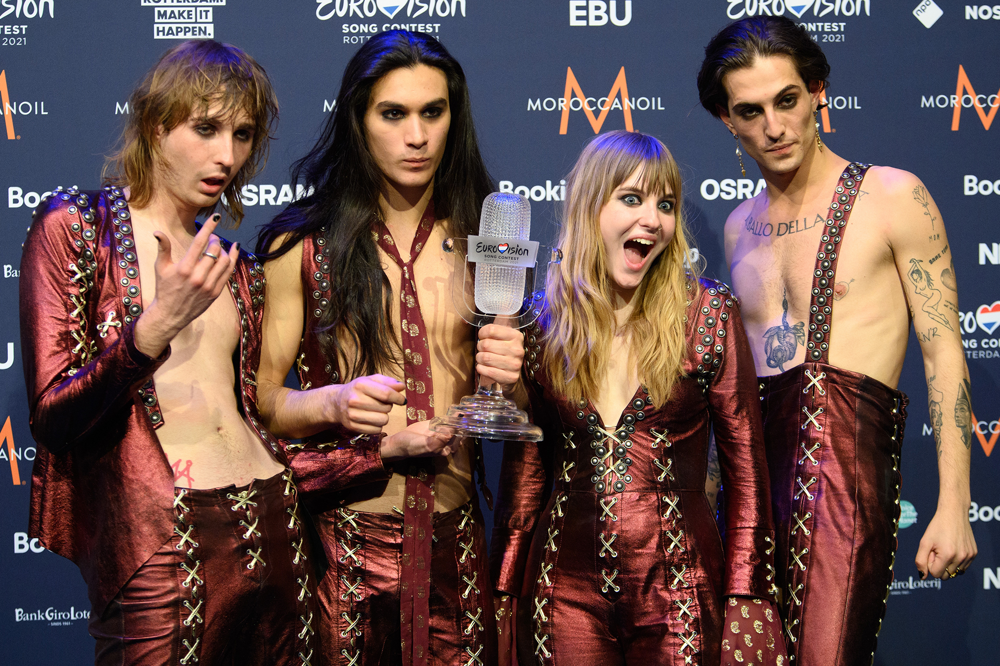

åneskin одержали победу на музыкальном фестивале «Сан-Ремо 2021» с песней «Zitti e buoni»[16]. Незадолго до этого группа объявила о релизе своего нового альбома под названием Teatro d’ira, дата выхода которого назначена на 19 марта 2021 года[17]. Måneskin представили Италию на конкурсе песни «Евровидение-2021» в Роттердаме с песней «Zitti e buoni» (в слегка отцензурированной версии[18]). Национальные жюри присудили группе в общей сложности 206 баллов (поставив её на 4-е место с отставанием от лидера, швейцарского исполнителя Gjon’s Tears, на 61 очко), однако в голосовании телезрителей группа набрала 318 баллов (на 51 балл больше получивших у зрителей второе место украинских исполнителей Go_A) и в сумме оказалась на первом месте с 524 баллами, опередив занявшую второе место французскую певицу Барбару Прави на 25 очков[19][20].

Måneskin (произносится «Монэскин») — итальянская рок-группа, членами которой являются главный вокалист Дамиано Давид, басистка Виктория Де Анжелис, гитарист Томас Раджи и барабанщик Итан Торкио. Основными вехами на пути группы к известности стали второе место в одиннадцатом сезоне итальянского шоу талантов X Factor в 2017 году, победа на Фестивале в Сан-Ремо, представлявшем собой итальянский национальный отбор на Евровидение-2021, а также победа на самом Евровидении-2021 с песней «Zitti e buoni».Участники группы знакомы ещё со времён совместной учёбы в средней школе. В 2016 году, будучи студентами римского лицея имени Джона Кеннеди, они приняли решение о создании группы. Название было выбрано незадолго до регистрации на местном музыкальном конкурсе для начинающих групп. Участники попросили Викторию, наполовину датчанку, привести несколько датских слов, надеясь, что хотя бы одно из них сможет подойти. Было решено назвать группу Måneskin («лунный свет»), несмотря на то, что значение слова никак не было связано с самой группой. Конкурс начинающих групп Pulse ознаменовал поворотный момент в их карьере, так как им пришлось начать писать свои собственные песни. Участие в конкурсе позволило им выступить в Felt Music Club & School, где позже они завоевали свою первую награду.Участники группы знакомы ещё со времён совместной учёбы в средней школе. В 2016 году, будучи студентами римского лицея имени Джона Кеннеди, они приняли решение о создании группы. Название было выбрано незадолго до регистрации на местном музыкальном конкурсе для начинающих групп. Участники попросили Викторию, наполовину датчанку, привести несколько датских слов, надеясь, что хотя бы одно из них сможет подойти. Было решено назвать группу Måneskin («лунный свет»), несмотря на то, что значение слова никак не было связано с самой группой. Конкурс начинающих групп Pulse ознаменовал поворотный момент в их карьере, так как им пришлось начать писать свои собственные песни. Участие в конкурсе позволило им выступить в Felt Music Club & School, где позже они завоевали свою первую награду.